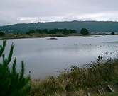
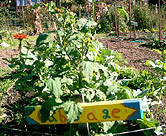
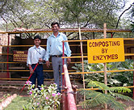
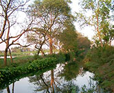
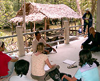
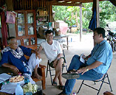
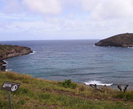

|
 |
 |
Puntos de
Inflexión Ecológica
- Cómo funcionan?
- Transformando círculos viciosos a círculos virtuosos
- Ingredientes para el éxito
- Elaboren sus propios Puntos de Inflexión Ecológica
Historias por Región
Historias por Tema
- Agricultura
- Agua y Cuencas
- Bosques
- Ecosistemas Urbanos
- Educación
- Energía
- Negocios
- Pesquerías
- Salud Pública
Videos Cortos
- Salvando un arrecife coral y una pesquería
(Filipinas) - Revitalizando vecindades urbanas con jardines comunitarios
(Nueva York) - Revirtiendo la deforestación tropical con bosques comunitarios
(Thailandia) - Rellenando aguas subterráneas con captación pluvial
(Rajastán, India) - Escapando la trampa de pesticidas
(India)
Explicando el Éxito
- Salvando un arrecife coral y una pesquería
(Filipinas) - Revitalizando vecindades urbanas con jardines comunitarios
(Nueva York) - Revirtiendo la deforestación tropical con bosques comunitarios
(Thailandia) - Rellenando aguas subterráneas con captación pluvial
(Rajastán, India) - Escapando la trampa de pesticidas
(India)

Ecología Humana: Presenta los principios de la ecología humana que sirven de fundamento a los Puntos de Inflexión Ecológica
Watch EcoTipping Point Story Videos


See EcoTipping Point Photos from Around the World
 |
 |
 |
 |
| Humedales Artificiales California |
Patio Comestible California |
Víveres comunitarios California |
Captación Pluvial Urbana India |
 |
 |
 |
 |
| Escapando de la Trampa de los Pesticidas India |
Captación Pluvial India |
Agro-Ecosistema de Humedales India |
Vivienda Ecológica India |
 |
 |
 |
 |
| Santuario Marino Filipinas |
Gestión de Manglares Tailandia |
Agrosilvicultura Comunitaria Tailandia |
Reutilización y Reciclaje Tailandia |
 |
|||
| Bahía Hanauma Hawaii |